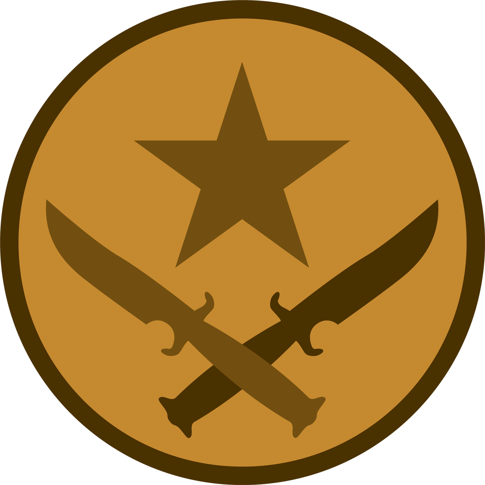

Terroristi
I terroristi sono coloro che devono piantare la bomba in un punto preciso della mappa tra A oppure B.
Hanno i siti-bomba più lontani E hanno le armi meno costose ma più forti a differenza degli antiterroristi.
Per vedere le armi che hanno i terroristi e antiterroristi cliccare la scritta "Armi" qua sotto.
